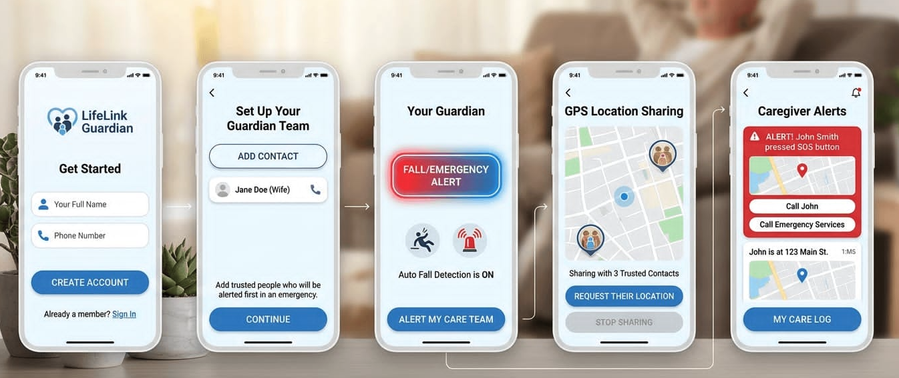

Fall and emergency alerts
Possible emergencies can trigger immediate alerts so help is not delayed by uncertainty or silence.
AI-powered safety support for seniors living independently.
LifeLink Guardian helps older adults stay confident at home while keeping families informed the moment something feels wrong. One smartphone becomes a faster path to reassurance, response, and peace of mind.



Falls, sudden health issues, and moments of confusion do not always happen when someone else is nearby. Families want independence for their loved ones, but they may not know right away when help is needed.
A fall or medical emergency can leave a senior unable to call for help quickly.
Caregivers may only learn about a problem after valuable response time has already passed.
Traditional solutions often feel expensive, complicated, or hard to use every day.
LifeLink Guardian uses a senior's smartphone to detect possible emergencies, share GPS location, and alert trusted caregivers instantly. It is designed to reduce delay, simplify communication, and help support arrive faster.
AI monitors for possible falls or emergency-trigger events.
GPS location and emergency context are sent to the right people right away.
Caregivers and family members can respond faster with better information.
The app fits into a device many seniors and families already use, which lowers friction while expanding safety coverage beyond the home.
LifeLink Guardian focuses on practical tools that help seniors feel supported without making the experience feel clinical or overwhelming.
Possible emergencies can trigger immediate alerts so help is not delayed by uncertainty or silence.
Trusted contacts receive location details to find the senior faster.
Family members and caregivers get instant updates when attention is needed.
Set up trusted people in advance so alerts go to the right support network without extra steps.
Simple screens, clear actions, and readable layouts make the app easier to use during stressful moments.
LifeLink Guardian helps seniors keep living on their own terms while giving families more confidence that someone will know when quick action matters.
Encourages confidence at home with a simple safety layer that travels with the user.
Alerts and location sharing shorten the gap between an incident and meaningful help.
Caregivers get clearer visibility instead of waiting and wondering.
Works through a familiar mobile device instead of relying on costly specialized hardware.
Request early access, ask for a demo, or share how you want to support seniors and caregivers in your community.
Try LifeLink Guardian@lifelinkguardian on Facebook, Instagram, and LinkedIn
We’ll reach out with next steps, product updates, and demo availability.